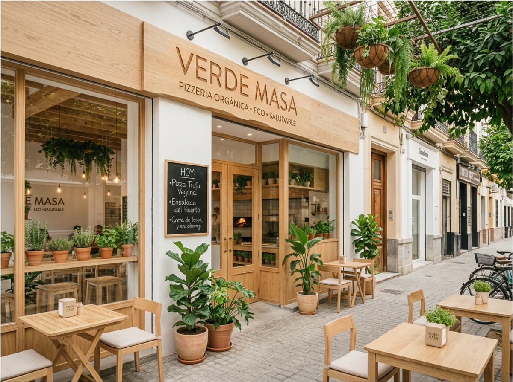
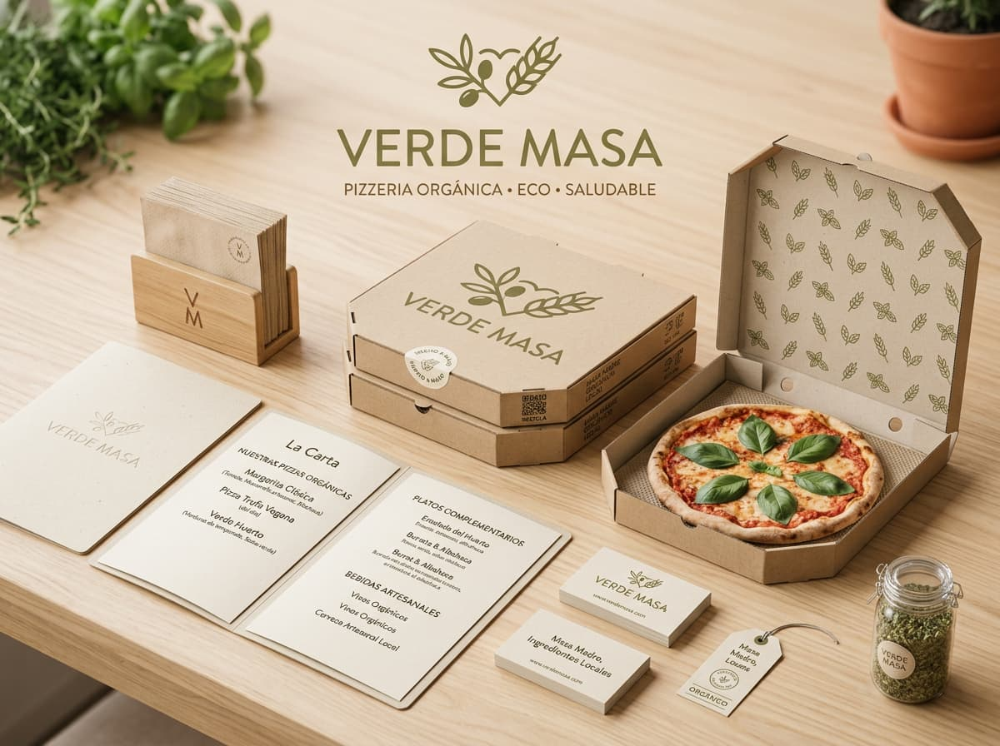
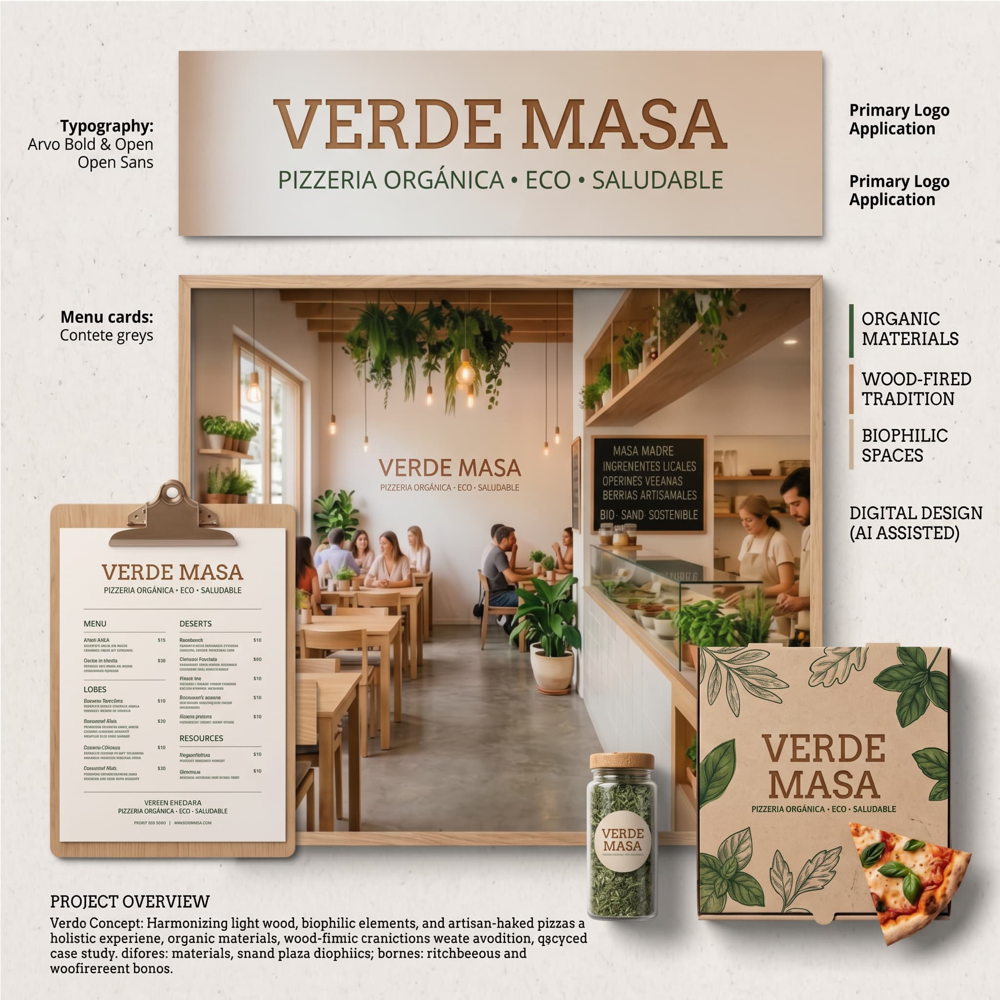
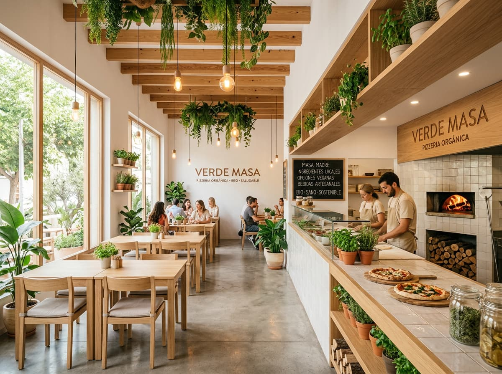

Identidad visual con inteligencia artificial
Pizzería Verde Masa
Proyecto creativo centrado en el desarrollo de la identidad visual de una marca mediante el uso de herramientas de inteligencia artificial. A lo largo del proceso, exploré diferentes recursos visuales, conceptos y estilos para construir una imagen coherente con la personalidad de la marca.
El proyecto combina creatividad, diseño gráfico e inteligencia artificial, integrando estas herramientas como apoyo en la generación de ideas y el desarrollo de propuestas visuales.
- Diseño gráfico
- Diseño digital
- Identidad corporativa
- Inteligencia artificial
-

-

-

-

- Cliente
- Pizzería Verde Masa (proyecto personal)
- Rol
- Diseño de identidad visual
- Disciplina
- Branding e inteligencia artificial
- Herramientas
- Adobe Firefly
- Illustrator